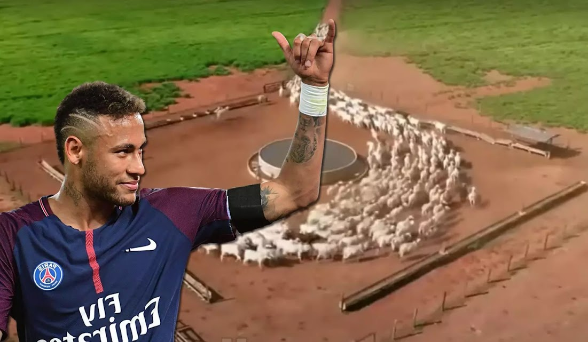

Sobre
O agro e a cidade estão cada vez mais conectados. A agricultura moderna utiliza tecnologias que facilitam a produção e distribuição de alimentos, enquanto as cidades dependem desses produtos para garantir a alimentação de seus habitantes.
Benefícios
- Eficiência: Tecnologias agrícolas aumentam a produção e reduzem o desperdício.
- Qualidade: Produtos frescos e de alta qualidade chegam às cidades.
- Sustentabilidade: Práticas agrícolas sustentáveis ajudam a preservar o meio ambiente.
Contato
Se você tiver perguntas ou quiser saber mais sobre a conexão entre o agro e a cidade, entre em contato conosco:
Email: agrodoneymar@hotmail.com
Telefone: (43) 98870-7289